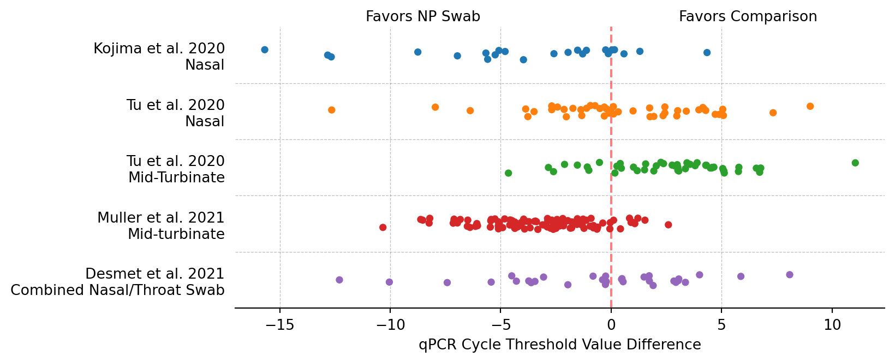
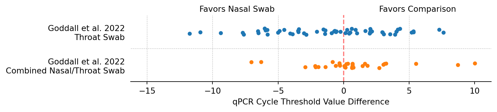
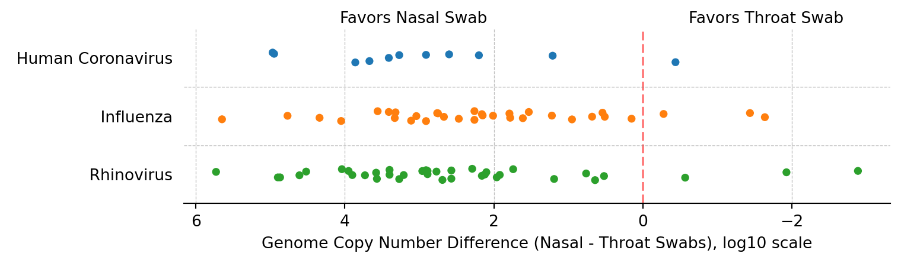
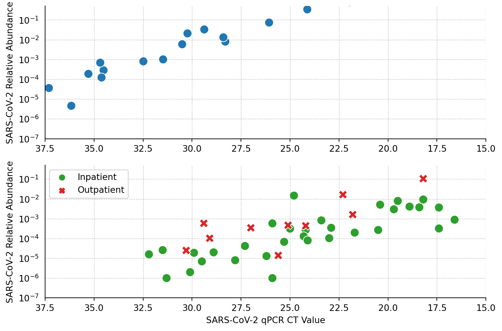

Code
# Importing packages
import seaborn as sns
import pandas as pd
import matplotlib.pyplot as plt
import numpy as npSimon Grimm
February 23, 2024
The NAO aims to detect stealth pathogens at an early stage. While WTP sampling offers some advantages, its limitations include environmental noise, non-human biological material, and low pathogen abundance. The NAO thus also wants to investigate other sampling approaches. To this end we’ve previously researched the promise of air sampling for pathogen early detection, and Will recently created a framework that allows analysis of various types of sampling strategies.
One promising approach is sampling using nasal, nasopharyngeal (NP), or oropharyngeal (OP) swabs. When pooled, these samples have several advantages [high relative abundance, more metadata, probably less dynamic complexity than wastewater, probably less static complexity than wastewater]. It also has downsides [difficult to get samples with large geographic coverage, scaling is hard, EGD is harder, regulatory hurdles are higher than with wastewater].
Respiratory pathogens are likely to cause future pandemics (Amesh A. Adalja, MD, Matthew Watson, …) Though the tropism across different tissues differs across respiratory pathogens (SARS-CoV-2 has a wider tropism than influenza (Flerlage et al. 2021)), all of them are likely to shed predominantly in the respiratory tract, which includes the pharynx, mouth, and nose.
Sensitivity (Tsang et al. 2021) performed a meta-analysis to evaluate the ability of different swab types in detecting SARS-CoV-2 using qPCR. Swab types included nasal swabs (n=1622), throat swabs (n=388), and pooled nasal and throat swabs (n=719), each of which were compared to nasopharyngeal swabs. Overall, pooled nasal/throat swabs have the best diagnostic performance with sensitivity of 0.97 (0.93-1.00).
| Sample Type | Sensitivity | Specificity | Positive Predictive Value | Negative Predictive Value |
|---|---|---|---|---|
| Nasal swabs (n=1622) | 0.86 (0.77-0.93) | 0.99 (0.96-1.00) | 0.96 (0.87-1.00) | 0.95 (0.88-0.99) |
| Throat swabs (n=388) | 0.68 (0-35-0.94) | 0.97 (0.95-0.99) | 0.75 (0.45-0.96) | 0.96 (0.94-0.98) |
| Pooled nasal/throat swabs (n=719) | 0.97 (0.93-1.00) | 0.99 (0.98-1.00) | 0.97 (0.90-1.00) | 0.99 (0.98-1.00) |
Table X: Comparison of different swab sample types. Adapted from (Tsang et al. 2021). Values are effect sizes under a random effects-model. The gold standard is nasopharyngeal swabs.
Though Tsang et al. 2021 reports specificity, this metric isn’t very useful in this context. All studies covered by the review used qPCR to detect SARS-CoV-2. qPCR is generally considered to be very sensitive and specific. Thus, if a patient tests positive in a throat swab qPCR, but negative in nasopharyngeal swab qPCR, this shouldn’t be counted against throat swabs (false positive), but rather against nasopharyngeal swabs.
The review above gives us binary information about SARS-CoV-2 being present in different swab types. But we are not merely interested in a pathogen being present in a sample at all, but how abundant said pathogen is. E.g., throat swabs coming back negative when NP swabs come back positive tells us that pathogen abundance is likely higher in the nasopharynx, but it’s unclear by how much. Getting a better understanding of this is particularly relevant when pooling samples, as higher relative abundance in a positive sample will ensure detection even if said sample is pooled with a large number of negative samples. To quantify this difference in absolute pathogen abundance between sample types we can look beyond positive/negative comparisons and instead look at the differences in CT scores within studies that made sample type comparisons.
Most studies on swab sampling performance treat nasopharyngeal swabs (NP swabs) as the gold standard, against which, nasal (Kojima et al. 2021; Tu et al. 2020), mid-turbinate (Tu et al. 2020; Muller et al. 2021), and combined nasal/oropharyngeal (Desmet et al. 2021) swabs are compared. NP swabs are commonly administered by a healthcare professional and a properly administered test absorbs material from below the inferior turbinate, and the nasopharynx located at the back of the nasal cavity.
The CT value difference for paired NP/{Other} swabs are plotted in Figure 1. The CT value of the comparison swab is subtracted from the NP swab CT value. A lower CT is better, thus, a negative cycle threshold (CT) difference equates to a higher pathogen concentration in the NP swab.
# All CT difference data were calculated in and are taken from https://docs.google.com/spreadsheets/d/1YP4mxT_vxiFwXU5ZuBM4obq_oscfhe05ODWwHFHEznM/
df = pd.read_csv("data/np_ct_differences.tsv", sep="\t", skiprows=1)
df.columns = df.columns.str.replace(", ", "\n")
df = df.melt(var_name="Study & Comparison", value_name="CT Difference")
fig = plt.figure(figsize=(8, 3.5))
sns.stripplot(
data=df,
y="Study & Comparison",
x="CT Difference",
hue="Study & Comparison",
jitter=True,
)
plt.legend([], [], frameon=False)
# drop y axis label
plt.ylabel("")
plt.xlabel("qPCR Cycle Threshold Value Difference")
plt.tick_params(axis="y", which="both", left=False, right=False, labelleft=True)
for x in 5, 0, -5, -10, -15:
if x == 0:
plt.axvline(x=x, color="red", linestyle="--", alpha=0.5)
continue
plt.axvline(x=x, color="grey", linestyle="--", alpha=0.5, linewidth=0.5)
for y in 0.5, 1.5, 2.5, 3.5, 4.5:
plt.axhline(y=y, color="grey", linestyle="--", alpha=0.5, linewidth=0.5)
min_x, max_x = plt.xlim()
plt.text(max_x / 2, -0.6, "Favors Comparison", fontsize=10, color="black", ha="center")
plt.text(min_x / 2, -0.6, "Favors NP Swab", fontsize=10, color="black", ha="center")
plt.gca().spines["right"].set_visible(False)
plt.gca().spines["top"].set_visible(False)
plt.gca().spines["left"].set_visible(False)
plt.show()
All studies, bar one, show equivalent or superior performance of nasopharyngeal swabs. The outlier study, (Tu et al. 2020) shows lower CT values for self-collected mid-turbinate swabs vs professionally collected NP swabs. In the same study, nasal swabs prove equivalent to NP swabs. Combined oro-pharyngeal swabs are also equivalent to NP swabs.
Studies that use NP swabs as their gold standard are useful to better understand the performance of other swab types, but NP swabs themselves are not practical for a large-scale pooled sampling programs: NP swabs are notoriously uncomfortable and are commonly administered by a third person. Conversely, nasal or oropharyngeal swabs would be more suitable for self-sampling, which allows far higher testing throughput. Let’s thus look at studies that compare nasal and oropharyngeal swabs.
In qPCR measurements, nasal swabs contain more virus copies than throat swabs. In (Goodall et al. 2022), nasal swabs are slightly superior to throat swabs and combined/nasal throat swabs, and come out about even when compared to combined nasal/OP swabs. In (Leung et al. 2020), researchers ran multiplex-PCR on both nasal and throat swamples. qPCR differences are plotted in Figure 3 for Human Coronavirus, Influenza, and Rhinovirus.
df = pd.read_csv("data/nasal_ct_differences.tsv", sep="\t", skiprows=1)
df.columns = df.columns.str.replace(", ", "\n")
# reshape dataframe to long format
df = df.melt(var_name="Study & Comparison", value_name="CT Difference")
fig = plt.figure(figsize=(8, 1.5))
sns.stripplot(
data=df,
y="Study & Comparison",
x="CT Difference",
hue="Study & Comparison",
jitter=True,
)
plt.legend([], [], frameon=False)
# drop y axis label
plt.ylabel("")
plt.xlabel("qPCR Cycle Threshold Value Difference")
plt.tick_params(axis="y", which="both", left=False, right=False, labelleft=True)
for x in 5, 0, -5, -10, -15:
if x == 0:
plt.axvline(x=x, color="red", linestyle="--", alpha=0.5)
continue
plt.axvline(x=x, color="grey", linestyle="--", alpha=0.5, linewidth=0.5)
plt.axhline(y=0.5, color="grey", linestyle="--", alpha=0.5, linewidth=0.5)
min_x, max_x = plt.xlim()
plt.text(max_x / 2, -0.6, "Favors Comparison", fontsize=10, color="black", ha="center")
plt.text(min_x / 2, -0.6, "Favors Nasal Swab", fontsize=10, color="black", ha="center")
plt.gca().spines["right"].set_visible(False)
plt.gca().spines["top"].set_visible(False)
plt.gca().spines["left"].set_visible(False)
plt.show()
# All CT difference data was calculated and is taken from https://docs.google.com/spreadsheets/d/1YP4mxT_vxiFwXU5ZuBM4obq_oscfhe05ODWwHFHEznM/
# turn tsv into dataframe. Ignore first row. Second row is column names.
df = pd.read_csv("data/leung_genome_copy_differences.tsv", sep="\t", skiprows=1)
df = df.melt(var_name="Study & Comparison", value_name="Genome Copy Number Difference")
df["Study & Comparison"] = df["Study & Comparison"].str.split(",").str[-1]
fig = plt.figure(figsize=(8, 2))
sns.stripplot(
data=df,
y="Study & Comparison",
x="Genome Copy Number Difference",
hue="Study & Comparison",
jitter=True,
)
plt.legend([], [], frameon=False)
# drop y axis label
plt.ylabel("")
plt.xlabel("Genome Copy Number Difference (Nasal - Throat Swabs), log10 scale")
# flip x axis
plt.gca().invert_xaxis()
plt.tick_params(axis="y", which="both", left=False, right=False, labelleft=True)
for x in -2, 0, 2, 4, 6:
if x == 0:
plt.axvline(x=x, color="red", linestyle="--", alpha=0.5)
continue
plt.axvline(x=x, color="grey", linestyle="--", alpha=0.5, linewidth=0.5)
for y in 0.5, 1.5:
plt.axhline(y=y, color="grey", linestyle="--", alpha=0.5, linewidth=0.5)
min_x, max_x = plt.xlim()
plt.text(max_x / 2, -0.6, "Favors Throat Swab", fontsize=10, color="black", ha="center")
plt.text(min_x / 2, -0.6, "Favors Nasal Swab", fontsize=10, color="black", ha="center")
plt.gca().spines["right"].set_visible(False)
plt.gca().spines["top"].set_visible(False)
plt.gca().spines["left"].set_visible(False)
plt.show()
Whatever the sample type, ultimately we will want to perform metagenomic sequencing to detect novel pathogens. As described in a previous report, the value of a metagenomic sequencing sample will can be assessed across several dimensions:
Three studies performed paired metagenomic sequencing and SARS-CoV-2 qPCR on swab samples, Castañeda-Mogollón et al. 2021, Lu et al. 2021, Babiker et al. 2020. In their results Castañeda-Mogollón et al. 2021 only shows absolute SARS-CoV-2 genome copies, so we will skip this study for now.
df_throat = pd.read_csv("data/lu_throat_ct_mgs.tsv", sep="\t", skiprows=1)
df_throat.rename(
columns={
"SARS-CoV-2 RT-PCR Ct": "scv2_ct",
"SARS-CoV-2 RA": "scv2_ra",
"Inpatient/ED vs. Outpatient": "patient_status",
},
inplace=True,
)
df_throat["scv2_ct"] = df_throat["scv2_ct"].replace(",", ".", regex=True).astype(float)
df_nasopharyngeal = pd.read_csv("data/babiker_np_ct_mgs.tsv", sep="\t", skiprows=1)
df_nasopharyngeal.rename(
columns={"SCV-2 Relative Abundance": "scv2_ra", "Ct value": "scv2_ct"}, inplace=True
)
fig, axs = plt.subplots(2, 1, figsize=(9, 6))
for i, (ax, df) in enumerate(zip(axs, [df_nasopharyngeal, df_throat])):
if i == 1:
# set dot colors
sns_default_colors = sns.color_palette("tab10")
sns.scatterplot(
ax=ax,
data=df,
x="scv2_ct",
y="scv2_ra",
hue="patient_status",
style="patient_status",
s=100,
palette=sns_default_colors[2:4],
)
# set coordinates for legend
coordinates = (0.6, -0.2)
ax.legend(title="", loc="upper left") # bbox_to_anchor=coordinates)
ax.set_xlabel("SARS-CoV-2 qPCR CT Value")
else:
sns.scatterplot(ax=ax, data=df, x="scv2_ct", y="scv2_ra", s=100)
ax.set_xlabel("")
ax.set_yscale("log")
ax.invert_xaxis()
ax.spines["right"].set_visible(False)
ax.spines["top"].set_visible(False)
ax.tick_params(axis="y", which="both", left=False, right=False, labelleft=True)
ax.set_xlim(37.5, 15)
ax.set_ylim(10**-7, 0.5)
ax.set_ylabel("SARS-CoV-2 Relative Abundance")
for x in np.arange(15, 37.5, 2.5):
ax.axvline(x=x, color="grey", linestyle="--", alpha=0.5, linewidth=0.5)
for y in range(-7, 1, 1):
log_y = 10**y
ax.axhline(y=log_y, color="grey", linestyle="--", alpha=0.5, linewidth=0.5)
Create a figure for the remaining viruses not covered in Figure 3.